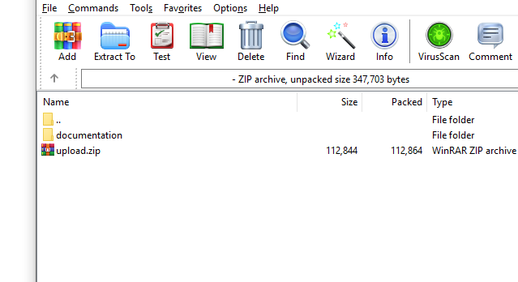
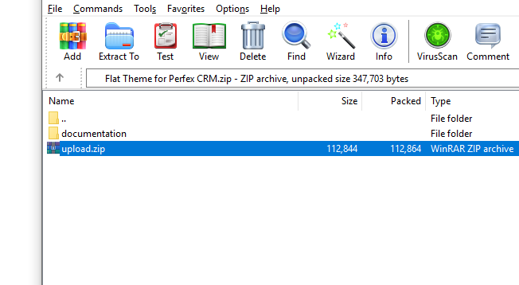
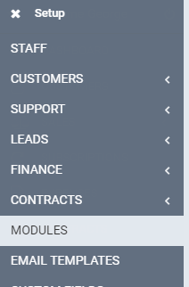
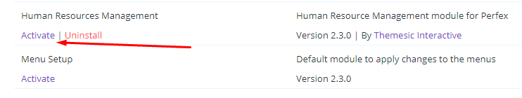
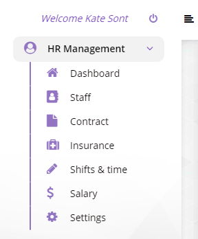

“Human Resources Managementmodule for Perfex CRM” Documentation by “modulesic” v1.0
“Human Resources Managementmodule for Perfex CRM”
Created: 12/05/2020
By: Derek Armstrong
Email: info@modulesic.com
Thank you for choosing Human Resources Managementmodule for Perfex CRM. If you have any questions that are beyond the scope of this help file, please feel free to email us via contact form here.
Table of Contents
A) Upload & activate the module - top
- Extract your downloaded file contens. You will notice a folder called "documentation" and a new zip file, called "upload.zip". Since "documentation" folder contains this readme file and helpful instructions that are not needed in your Perfex CRM's installation, we will focus on the "upload.zip" file.
 - "upload.zip" contains the module files (in a module format) that you upload in Perfex CRM's Modules installation section.
 - Go to your Perfex CRM's Admin area and select the following menu item: SETUP > MODULES.
 - Select the extracted upload.zip at Module installation selection prompt and press INSTALL.
- Find the newly installed module and press ACTIVATE.
 - You will be told that module is successfully activated.

That's it! You are now ready to start using the module.
B) How to use Human Resources Managementmodule - top
-
Once module is activated, a new menu item will appear at the right column of your Perfex admin area:

The actual menu list returns a plethora of specific elements which can be used under a variety of flexible company-adapting usage.
The following videocast, demonstrates a basic HR setup for an average company, showcasing our module's functionality.
Once again, thank you so much for purchasing this module. Feel free to leave your comments at item's page. We will be glad to help you if you have any support inquiries relating to this module aswell, directly at Support Ticketing Area in case you run under trouble and you need assistance.
A member of our team will get back to you as soon as possible (TAT 1 workday).
Themesic Interactive